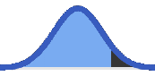

Sample Size Calculator
Finds the minimum quantity of observations for your test to be statistically significant
What are you doing?
What if...?
Methodology
One Sample Proportion Z-testwhere follows a Standard Normal Distribution and the confidence level is found in the middle of the distribution, inside a minimum and maximum bounds (two-tailed).
What if...?
Methodology
One Sample Proportion Z-testwhere follows a Standard Normal Distribution and the confidence level is found in the middle of the distribution, inside a minimum and maximum bounds (two-tailed).
at the right side of the distribution (one-tailed).
at the left side of the distribution (one-tailed).

Methodology
One Sample Mean Z-testwhere follows a Standard Normal Distribution and the confidence level is found in the middle of the distribution, inside a minimum and maximum bounds (two-tailed).
Methodology
One Sample Mean Z-testwhere follows a Standard Normal Distribution and the confidence level is found in the middle of the distribution, inside a minimum and maximum bounds (two-tailed).
at the right side of the distribution (one-tailed).
at the left side of the distribution (one-tailed).
Methodology
Two Sample Proportion Z-test with pooled variancewhere follows a Standard Normal Distribution and the confidence level is found in the middle of the distribution, inside a minimum and maximum bounds (two-tailed).
Methodology
Two Sample Proportion Z-test with unpooled variancewhere follows a Standard Normal Distribution and the confidence level is found at the left side of the distribution (one-tailed).
Methodology
Two Sample Mean Z-testwhere follows a Standard Normal Distribution and the confidence level is found in the middle of the distribution, inside a minimum and maximum bounds (two-tailed).
at the right side of the distribution (one-tailed).
at the left side of the distribution (one-tailed).
Methodology
Two Sample Mean Z-testwhere follows a Standard Normal Distribution and the confidence level is found at the left side of the distribution (one-tailed).
Q&A:
Where is the α alpha?
It's in the confidence level. A 95% confidence level is the same thing as an α of 5%.
Why do I need to know the rate BEFORE taking the sample?
Because the variability of the sample's rate depend on the level of the rate. You should use the best guess you have about the true rate and then fine tune sample size as the results come in. Some calculators encourage you to use 50% rate, as this is the one that generates the largest variability and, consequently, the largest sample size. But, if you have previous insight about the level of the rate, use it.
Why do I need to know these rates BEFORE taking the sample?
Sample rate: Because the difference between the observed sample rate and a given reference rate is crucial to say if the rates are statistically different or not. If you get a small difference, you'll need a much bigger sample to say they are different.
Reference rate: Because the variability of the sample's rate depend on the level of the rate. Some calculators encourage you to use 50% rate here, as this is the one that generates the largest variability and, consequently, the largest sample size. But, if you do that, be carefull to also adjust the sample rate accordingly, since the sample size will depend on the difference between sample rate and this reference rate.
You should use the best guess you have about the true value of these rates and then fine tune sample size as the results come in.
How do I define the interval?
This represents the level of precision you want to have. Small intervals means high precision, but will also require larger sample sizes. Input an interval that makes sense for what you are testing. Consider that, after the test, this is going to be the level of precision of the rate you'll measure.
Why do other online calculators give different results?
Calculator.net gives the same result, just be careful with the "Margin of Error" parameter because the tooltip recommends inputing the percentage in relative terms, but the math behind it uses absolute terms.
Raosoft and Select statistical services give the same result, but they have an additional parameter, the size of the population. If the size is large, the result is equal to this calculator. They also don't explain well how to input the margin of error, which is the same as this calculator, but they don't say it is treated as absolute terms like percentage points, instead of relative terms.
SurveyMonkey, Qualtrics, CheckMarket and QuestionPro consider the rate to be 50% and don't provide a way to change it. That's probably not a bad assumption for online surveys, given the uncertainty about the answers, but it inflates the sample size, especially if you already know the expected value you are measuring is much different from 50%. These calculators also have the population size parameter and, if the size is large, the result is equal to this calculator.
Sample Size Calculators for designing clinical research gives the same results under the name "Normal approximation to the binomial calculation", and it also gives a higher sample size under "Binomial 'exact' calculation", but there is no explanation about this alternative methodology.
-- add calculators with Beta!!!!
Why do other online calculators give different results?
Statistics Kingdom and infrrr give the same result, but you input the sample size and they give you the confidence interval or the p-value (the other way around).
Why do other online calculators give different results?
Calculator.net, 365DataScience and Sample Size Calculators for designing clinical research give the same result, but you input the sample size and they give you the confidence interval (the other way around). On the other hand, the latter one provides an improved accuracy for small sample sizes because it uses the student's t distribution instead of the Normal distribution, which is relevant for samples under ~30 observations, making it even more precise than this calculator.
Heads up! Several online calculators like Raosoft, SurveyMonkey, Qualtrics, CheckMarket and QuestionPro assume that your data is binary: each observation is either 1 (one) or 0 (zero), or true/false, or the person answered yes/no to a question, which is OK for measuring what proportion of website visitors makes a purchase, or what is the rate of employment of a population. This calculator also provide that kind of answer, but you have to choose "measuring the rate", rather than "measuring the average value" at the top.
-- add calculators with Beta!!!!
Why do other online calculators give different results?
365DataScience, Omni Calculator and infrrr give the same result, but you have to input the sample size and they give you the confidence level or the p-value (the other way around). On the other hand, the latter one provides an improved accuracy for small sample sizes because it uses the student's t distribution instead of the Normal distribution, which is relevant for samples under ~30 observations, making it even more precise than this calculator.
-- add calculators with Beta!!!!
Why do other online calculators give different results?
fazer
https://www.stat.ubc.ca/~rollin/stats/ssize/b2.html
https://epitools.ausvet.com.au/ztesttwo?ZTestTwo%5Bp1%5D=0.03&ZTestTwo%5Bp2%5D=0.045&ZTestTwo%5Bn1%5D=100&ZTestTwo%5Bn2%5D=100&ZTestTwo%5Bconf%5D=0.05&ZTestTwo%5Btails%5D=&ZTestTwo%5Btails%5D=2&ZTestTwo%5Bp1%5D=0.03&ZTestTwo%5Bp2%5D=0.045&ZTestTwo%5Bn1%5D=859&ZTestTwo%5Bn2%5D=3434&ZTestTwo%5Bconf%5D=0.05&ZTestTwo%5Btails%5D=&ZTestTwo%5Btails%5D=2&ZTestTwo%5Bp1%5D=0.03&ZTestTwo%5Bp2%5D=0.04&ZTestTwo%5Bn1%5D=859&ZTestTwo%5Bn2%5D=3434&ZTestTwo%5Bconf%5D=0.05&ZTestTwo%5Btails%5D=&ZTestTwo%5Btails%5D=2&ZTestTwo%5Bp1%5D=0.03&ZTestTwo%5Bp2%5D=0.04&ZTestTwo%5Bn1%5D=1487&ZTestTwo%5Bn2%5D=5947&ZTestTwo%5Bconf%5D=0.05&ZTestTwo%5Btails%5D=&ZTestTwo%5Btails%5D=2&ZTestTwo%5Bp1%5D=0.1&ZTestTwo%5Bp2%5D=0.15&ZTestTwo%5Bn1%5D=1487&ZTestTwo%5Bn2%5D=5947&ZTestTwo%5Bconf%5D=0.05&ZTestTwo%5Btails%5D=&ZTestTwo%5Btails%5D=2&ZTestTwo%5Bp1%5D=0.1&ZTestTwo%5Bp2%5D=0.15&ZTestTwo%5Bn1%5D=1487&ZTestTwo%5Bn2%5D=5947&ZTestTwo%5Bconf%5D=0.05&ZTestTwo%5Btails%5D=&ZTestTwo%5Btails%5D=1
Mas não bate quando one tailed e n1 <> n2
https://sample-size.net/sample-size-proportions/
https://clincalc.com/stats/samplesize.aspx
https://www.statsig.com/calculator
-- add calculators with Beta!!!!